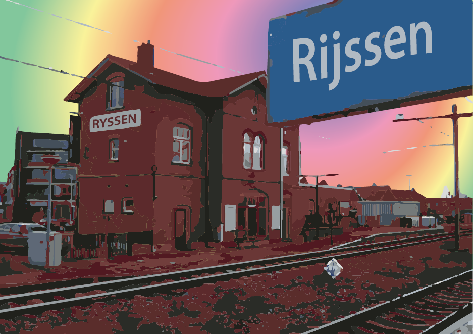
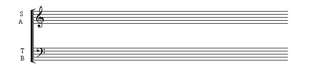
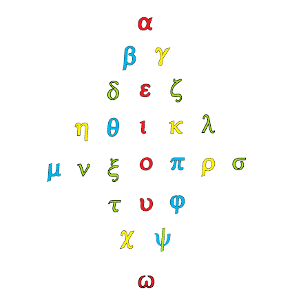
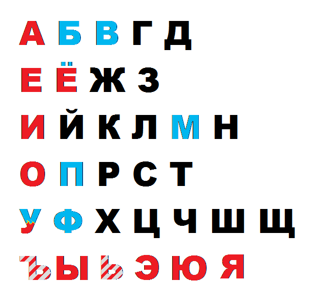

v.2.5
Три
богини судьбы
или,
как
некоторые говорят,
сестра
Форонея Ио изобрели
пять гласных первого алфавита
и
согласные В и Т1
 piс.1
piс.1
(ранние формы алфавита
не включают последней строки2,3)
В этой статье показано что буквы в алфавите
располагаются не случайным образом, но согласно их
артикуляционных (и, возможно,
семантических) свойств.
Так, гласные разделяют алфавит на
взаимоподобные линии вида глАсный-гуБной-яЗычные4 (pic.1). Исключения
из этого правила, такие как J, M и Y, рассматриваются далее. (гуБные – буквы, представлющие звуки,
для произнесения которых используются губы. яЗычные - буквы,
представляющие звуки, для произнесения которых используется
язык. глАсные - буквы, представляющие звуки, для
произнесения которых используется в основном голос(глас). Для O и особенно U используются губы (потому U подпалена синим), но так и
для Е и I используется язык, но это излишнее пока
уточнение (потому что пока мы рассматриваем таблицу алфавита
на основании мифа, вынесенного в эпиграф))
В этой версии статьи эта структура
проверена на латинском, греческом, еврейском, русском и
арабском алфавитах. Хотя оно
распростроняется также и на грузинский алфавит, в армянском
алфавите она не наблюдается.
Само представление алфавита как
артикуляционной таблицы сближает его со слоговыми системами
письма
1
(так, в японской
кане тоже пять строк, начинающихся с гласных и столбцы,
представляющие согласные составляющие слога, а в санскрите и
хангыле буквы расположены в соответствии с их артикуляционными
свойствами)
В полном согласии с эллинским мифом5,
дошедшим до нас в списке Гигина, губные и язычные могут быть
сопоставлены тем самым изначальным B и Т.
Положение Y вне столбца гласных не было ясно до тех
пор, пока не была обнаружена симметричность, представленная
ниже (рic.2).
 pic.2
pic.2
Предположительно, линейная
система (pic.1) была отброшена ради осевой (pic.2) по причине тенденции
Т-части (язычных) к разрастанию, по причине смены M на J по богословским причинам
(см. след. стр.), по причине добавления U-ряда с его Y и т.п.2,3
Следует также отметить, что Y является
избыточным, и в Нидерландах его по прежнему представляют так:

Y также
называют латинским дифтонгом6
2
Но как могло понимание
структуры алфавита быть утрачено? Вполне могло по причине
“бабуинов”, дерущихся за мир до руин и убивающих элиты на
постоянной основе с одной стороны, и снобствующих небожителей
типа меня с другой.
Но письменная система, даже
избавленная от её внутренней матрицы, определённо оказалась
слишком полезной, чтоб избавляться от неё.
Как бы то ни было, положение Y вне столбца гласных и перестановка M являлись не последними загадками, которые
следовало разрешить прежде, чем можно было представить всё это
как систему, а не просто апофению например. Основная
сложность, как ни странно, заключалась в труднопредставимости
передне- и заднеязыячных (pic.4) как единого целого, как язычные – не уверен, что сегодня это является
полноценным фонетическим термином, как правило язычные
разведены по разным подгруппам7 (но едва ли такую же дотошность
проявляли создатели алфавита, ведь в том мифе говорится лишь
о В и Т, тогда грамматисты, дополнившие алфавит особыми
формами язычных, знали о структуре, ведь они поставили их в
определённое место (переднеязычные всегда предшествуют
заднеязычным в каждой строке (даже в букве X)), (pic.4). Но при этом дополнительном
уточнении следовало понять причину, по которой H мог стоять на своём месте, и
ответом явилось предположение, что он мог быть не только [h], но и [ʃ], потому что он
называется ʌʃ & eitʃ, и Бьорк в “Human Behaviour” поёт её именно таким образом9.
 pic.4
pic.4
Другим вопросом было почему J & M стоят
там где стоят, и было высказано предположение, что с J начинается
имя Юпитера (Jupiter) (высшее патриархальное божество
римлян) (ср. Jovi & Jhvh – первое – имя Юпитер по
простому (как Дима для Дмитрия), второе – транслитерация имени
высшего патриархального божества евреев) Jah – то же самое имя еврейского
бога, но в представлении эфиопских раста), а с M –
международное слово Мама8
во всех ипостасях (в том
числе и как верховное матриархальное божество римлян) (Maat, Минерва, Макошь, Мара, Мария, богиня-Мать,
3
внутренняя потребность заставила
меня вспомнить о Музах (см. представление алфавиты как нотной
записи (на следующей странице)) и их матери Мнемозине, также
богини судьбы, создавшие алфавит, согласно мифу, вынесенному в
эпиграф, называются Мойрами (Μοῖραι),
Мойра является также одним из прочтений имени Мария10
(в ирландии, например) מרים горькая как море) MM как
женское верховное божество культуры предположительно создавшей
алфавит. Т.е. в этой работе
высказывается предположение патриархального захвата предыдущей
культуры: Quod licet Jovi, non licet bovi и т.д.
Эта пословица была упомянута в
связи с тем, что корова является важным элементом “языческих
верований11. Не только из-за предания о Veau d’Or, но также потому, что М это
ещё и М в слове молоко, и это практически то, что говорит
корова, плюс “рога” буквы, хотя египтяне изображали “рогатую”
сову вместо этой буквы, хотя сова говорит не Му, но уМ12,
что в русском языке означает интеллект – на первый взгляд едва
ли это связно, хотя сова действительно символизирует интеллект13.
Сии причины дают основания полагать, что M & J переставлены по религиозным
мотивам (потому что в греческом (далее в статье) тот же самый
фокус проделывает Зевс. Или же эта перестановка была произведена
по причине того, что М стала воистину Матерью, породив L и N, ведь эти две буквы являются язычными, а не
губными. Или всего лишь потому, что основной беспорядок
происходит в строках, где разделяются гласные: J & I становятся разными буквами (Iovi, Jovi – оба варианта правильны, как и
V в тех позициях, где бы мы использовали U (как в слове максимум,
например) – во многих надписях используют V14
Второе объяснение видится более
цельным, чем первое, потому что в еврейском алфавите нет j но знак ’ используется и для i и для j, так как исторически это две
формы одной буквы, так же как и V использовалась и для U и для V, и даже для W, особенно W, не только потому, что она и
артикуляционно и фонетически стоит между ними, в конце-концов, эта буква и называется wow ведь секс это wow – и это весьма надпоминает форму буквы, !, и
хотя в иврите нет U-линии, ведь он заканчивается
на Т, буква V, самая губная из всех гласных, является строго
губной в иврите и поставлена туда, где F стоит в латыни, а для звука F они используют пей, букву
идентичную латинской p, греческой и русской п, и т.д. В русском есть слова пей и
пой, непосредственно связанные с ртом, а в иврите буква
означает рот.
Также структура пра-алфавита, описанная в
мифе, вынесенном в эпиграф, вполне могла быть использована как
пентатоника15 где  &
представляли
собой бемоль и диез. Собственно,
запись музыки является одной из тех немногих областей, где
действительно требуется передача звучания:
&
представляли
собой бемоль и диез. Собственно,
запись музыки является одной из тех немногих областей, где
действительно требуется передача звучания:

Гласные,
которые добавили жрецы Аполлона, чтобы установить соответствие
между гласными и струнами божественной лиры,— это, вероятно,
те, которые упоминает
4
Деметрий — александрийский философ I в. до
н.э. — в своем труде "О стиле": "А, например, у египтян в гимне,
который поют жрецы, прославляя богов, следуют друг за другом
семь гласных звуков. И звучание этих гласных в результате
создаваемого ими благозвучия воспринимается как звучание флейты
или кифары... Но сейчас не время продолжать рассуждение об
этом".1
Латинский алфавит не стоит обособленно от
других систем письма, но является частью довольно
представительной семьи алфавитов, представители
которой
могут подтвердить или опровергнуть систему, найденную в
латинском алфавите (хотя
некоторые буквы и стоят на других местах, сохранится ли при
этом система, является ли она настоящей системой, а не
апофенией всего лишь?)
И предположительно старейший член этой группы, среди
используемых и поныне – это еврейский алфавит: он включает в себя лишь первые
четыре строки, прямо как в древних формах алфавита2

pic.6
א
ב
ג
ד
ה ו
ז
ח
ט
י
כ ך
ל
מ ם
נ ן
ס
ע
פ ף
צ ץ
ק
ר
ש
ת
Еврейский алфавит показывает ту же
структуру: глАсные-гуБные-яЗычные с той же перестановкой М как и в
греческом и в латинском. Но в нём I&J не разделились ещё, но и для долгой и краткой И используется י,
с которой, к слову, начинается יהוה
(то самое патриархальное высшее божество евреев) the word is read right to left
(jews & arabs write right to left as if their zadiks were
left-handers (in classical chinese there’s also write to left
direction, though first they fulfill the column, then wrote
the next one left from the previous one – which is pretty much
right-handed if you really look at it (just turned 90 degrees
around)
5
Хотя все еврейские буквы считаются
согласными, четыре из них находятся ближе всего к гласным (и традиционно транслитерируются в
другие языки при помощи гласных букв: так ה,
которая в арабском стала полностью оглушённой, в иврите,
находясь на конце слова, создаёт это –а, звенящее вполне
гласным звуком.
В нём нет ни следа какого-либо позиционного различения
заднеязычных от переднеязычных (ни
одна из очевидно заднеязычных: ג, כ, ק не
стоит в одном столбце, как было с c,g,k,q) что делает еврейский
алфавит ближе к предполагаемому источнику (где только B & T заданы, но никакого k – замечания, касательно этой
интереснейшей буквы, присутствовавшие в предыдущих версиях,
выделены в отдельную статью)
Но то, что он состоит лишь из четырёх
линий, ставит его за грань мифа, потому что в мифе описывается
пять гласных, что означает, что
еврейский алфавит был канонизирован до выделения гласной из
ו потому что она стоит в
очевидно губной колонне вместе с ב &
פ и не
хватает среди них лишь той самой M(מ)

Осевая симметрия также может быть найдена и
в еврейском алфавите, мощна.
6
pic.7
Α
Β
Γ
Δ
α
β
γ
δ
Ε
Ζ
Η
Θ
ε
ζ
η
θ
Ι
Κ Λ
Μ
Ν
Ξ
ι
κ
λ
μ
ν
ξ
Ο
Π
Ρ
Σ
Τ
ο
π
ρ
σς
τ
Υ
Φ
Χ
Ψ
Ω
υ
φ
χ
ψ
ω
Греческий алфавит тоже содержит в себе
систему AEIOU, но в
нём она ещё более искажена (не только в I-линии была предположительно проведена
реформа (смещение М со
столбца губных) , но также и в E-линии ныне
язычная θ (тета), (к
которой возводят русскую θ (фита), звучащую совершенно
как f (которая в латинском находится именно в этой
строке) – эти два факта позволяют сделать предположение, что
тысячелетие назад (если датирование адаптации
греческого под русское письмо верно) греческое θ звучало как f)) смещена со столбца губных
буквой ζ, которой, внезапно, тоже начинается имя
верховного патриархального божества, но Зевс, ранее начинавшийся с этой
буквы: Ζεύς, сегодня
записывается как Δίας,
что, внезапно, переводится как Юпитер, и едва ли случайно на
латыни бог это deus, что звучит практически как
Δίας, что в английском будет God, и это возможно, совпадение не стоило бы упоминания, если бы в латыни g не стояло в этой же строке
перед H (из всех греческих диалектов только в ионийском
H считалась гласной, но это было пореформенное изменение,
"Гласные, которые добавили жрецы Аполлона, чтобы установить
соответствие между гласными и струнами божественной лиры" хм, в английском эта цитата звучит иначе..
к сожалению, современный греческий происходит
именно из ионийского диалекта), перед которой в греческом как раз стоит ζ(Ζ). Также θεά
означает
“богиня”,
впрочем, θεός означает “бог”, но фея это фея, а мужик-фей
это как-то слишком нежно для бога, алсо Θεία (имя первой лунной богини,
матери солнца) транслитерируется как Фейя, как
Тейя она тоже транслитерируется, но, учитывая, что слово
фея есть, а слова тея в русском нет, полагаю такую
транслитерацию неверной (почитание фиты
в старой россии неприличной16, намекает на её
физиологическое значение (отметим также, что ז в иврите напрямую относится к мужской
физиологии)17
Также послевключения в I-линии более обширны, потому как она
содержит ξ которая очень похожа на ζ, являющуюся включением в
Е-линию (также они обе выглядят и звучат очень по змеиному)18
– возможно змеепоклонники оказали
влияние на эллинскую культуру в какой-то исторический период
(это может быть подтверждено либо опровергнуто в дальнейших
исследованиях) – отметим,
что в еврейском алфавите нет ни J ни ξ, чем подтверждается его
древнее происхождение и состояние более древнее чем у
латинского и греческого, потому что он был на века прерван
раньше, чем произошла большая часть реформ, хотя и застал
смещение М – и в нём нет U-линии, хотя I & U – две самые проблемные линии
– потому что I породило J, а U породило V.
7
Имя John/Иван не только иллюстрирует это (в иврите o,u,v,w все транслитерируются буквой ו которая занимает положение не совсем гласной) но также поднимает вопрос
гласности h, который возникает в положении в алфавите
семитских ה и ه хотя он совсем не звучит
гласной в арабской его версии, как и h в латинском, которое появляется
на ветви гласных в 19 также слова вида “гаплоидный” в
латинском представлены как haploid, а в греческом как απλοιδ
Положение ω вне
столбца гласных может быть объяснено при помощи осевой матрицы
(pic.8), хотя вероятность подобной
симметрии для последней линии составляет около 50% (осевая симметрия подтвердила
бы последнюю линию и в том случае, если гласная стояла бы в
позиции χ но не в позиции и φ или ψ)
pic.8
H в
греческом считалась гласной лишь в ионийском диалекте.
И во всех
диалектах греческого, кроме ионийского, за Е следовала F (но пока я не найду
оригинальный абеседарий одного из тех диалектов, я
остановлюсь здесь) Что очень похоже на ЕЁ в русском
алфавите, который происходит из греческого и то включает то
исключает букву Ё. Является ли это следствием некоего табу?
8
Хотя арабский алфавит зачастую представляют
в виде ا ب پ ت ث ج چ ح خ د ذ ر ز ژ سش ص ض ط ظ ع غ ف ق ک گ ل م ن ه و ی, большинство арабских букв
имеют числовые значения20 отличающиеся от этого
порядка (данного здесь с целью
показать буквы, отсортированными согласно их форме) – как в иврите, где на
основании этого концепта была построена каббала. (ה на
конце слова “каббала” (קַבָּלָה)
звучит очень даже гласно). Расположив
буквы
согласно их численного значения можно получить аналог алфавита
(т.н. абджад)

ا ب ج
د
ه و ز ح ط
ی ک ل م ن س
ع ف ص ق ر ش ت ث خ ذ ض ظ غ
безномерные в фарси: پп چч ژж گг
Порядок букв (до буквы ت включительно), совпадающий с таковым
в иврите, позволяет поставить
ه на
позицию гласной, в том числе и по
причинам, данным несколькими линиями ранее (в конце греческой части)

9

Русский алфавит, произошедши с
греческого унциала и хоть и не имеет очевидными губными во
второй строке, буква θ (фита) хоть и была вытеснена в конец алфавита
прежде чем отброшена вовсе ети, имеет числовое значение21
девяти (что ставит её во вторую линию). Русский алфавит
родствен с коптским – в обоих присутствует дополнительная
линия после греческой ω-подобной: причём как и в русском она идёт
кластером подобному шщ

10
 (ʃʌi) не только выглядит как русская ш, но и
звучит также. Возможно виновата в подобном сходстве семитская
ש, но это древняя буквa, скорее всего произошедшая из идеограммы
“зубы”( (в иврите эта буква означает зуб(и не только – всё это можете
проверить самостоятельно, ведь в эру интернетов нормативные
догмы подлежат реформехотя
ש, как и русская ш гораздо больше похожи на предыдущую
коптскую букву, ту которая похожа на греческую омегу, есть и
другая буква, встречающаяся сегодня лишь на тефилине, ש о
четырёх рогах, из-за отсутствия которой в еврейском алфавите
он считается неполным, но не только в коптском есть щ, но и
в русском, не та ли эта утерянная буква? но разве в иврите ש
не двояка, и с и ш, не является ли та точка для ш отражением
четвёртого лепестка/рога/пальца? или, раз это "зуб", то
четвёртого корня, как у верхнего зуба мудрости, например).
(подобная буква встречается также
и в финикийском и арабском)
(ʃʌi) не только выглядит как русская ш, но и
звучит также. Возможно виновата в подобном сходстве семитская
ש, но это древняя буквa, скорее всего произошедшая из идеограммы
“зубы”( (в иврите эта буква означает зуб(и не только – всё это можете
проверить самостоятельно, ведь в эру интернетов нормативные
догмы подлежат реформехотя
ש, как и русская ш гораздо больше похожи на предыдущую
коптскую букву, ту которая похожа на греческую омегу, есть и
другая буква, встречающаяся сегодня лишь на тефилине, ש о
четырёх рогах, из-за отсутствия которой в еврейском алфавите
он считается неполным, но не только в коптском есть щ, но и
в русском, не та ли эта утерянная буква? но разве в иврите ש
не двояка, и с и ш, не является ли та точка для ш отражением
четвёртого лепестка/рога/пальца? или, раз это "зуб", то
четвёртого корня, как у верхнего зуба мудрости, например).
(подобная буква встречается также
и в финикийском и арабском)
Забавно, что  &
&  напоминают русские
Ш&Щ, также следующие друг за другом в той же позиции (за 6
букв до конца)
напоминают русские
Ш&Щ, также следующие друг за другом в той же позиции (за 6
букв до конца)
Из всех рассмотренных выше алфавитов русский оказался самым
изменённым.
Он даже не укладывается в осевую симметрию должным образом (не могу сказать, что он
укладывается и в линейную матрицу)
Грузинский же алфавит должным образом укладывается в обе
матрицы:

Армянский алфавит не
укладывается ни в одну. (потому что
Маштоц его не изобрёл, а изувечил. но об этом смотрите в
следующей серии→)
11
Литература и Примечания:
1 Graves, Robert (1990) [1955]. The Greek Myths 1.
Penguin Books. ISBN 978-0-14-001026-8. (chapter “Alphabet”).
(неточный перевод на русский: http://www.sno.pro1.ru/lib/graves/52/52.htm)
2 Финикийский
и друзья (фриковатый
линк, но шикарные иллюстрации: например
3 Архаичная
Латынь (иллюстрация)
4 В
доказательство того, что даже k является язычным, приложена рентген-фотография.
найдено в
http://ling.cass.cn/yuyin/english/yinlu/pic.htm
5 отрывок
из Гигина на латыни (в этой
работе, тем не менее, за основу взят миф в записи Роберта
Грейвса1, не только потому, что он в большей
степени совпал с уже обнаруженными закономерностями, но и
потому, что миф в записи Гигина явно неточен (слово septem (семь) не соответствует количеству
представленных букв)
6 http://www.scribd.com/doc/154567093/Encryption-and-Decryption-of-the-Alphabetical-Hieroglyphs (Y)
7 Фонетический алфавит
8 Try & take
John 1:1 as a riddle with that word
9 Coronal ʌʃ
10 Mary
11 Io (мифология)
12 Сова говорит уM
13 Сова Афины
14 Roman square capitals
15 the best text i could find on hellenic music
16 Гоголь
«Мёртвые Души» (сноска в конце страницы)
17 ז
18 ξ hiζζeζ
19 (from 6)
20 Числовые
значения арабского алфавита
21 Числовые
значения русского алфавита (небезынтересен девятый номер
в глаголице)
12

{kind=link}
{kind=link}
{kind=link}
{kind=link}
{kind=link}
{kind=link}
{kind=link}
{kind=link}